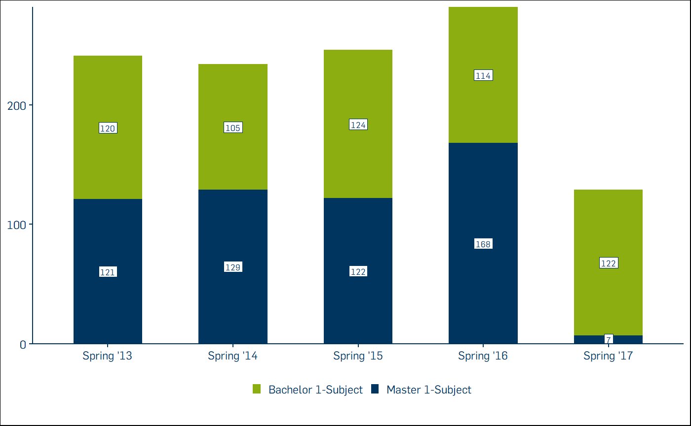
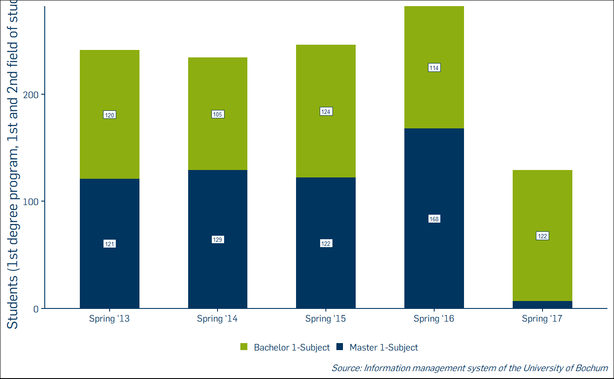
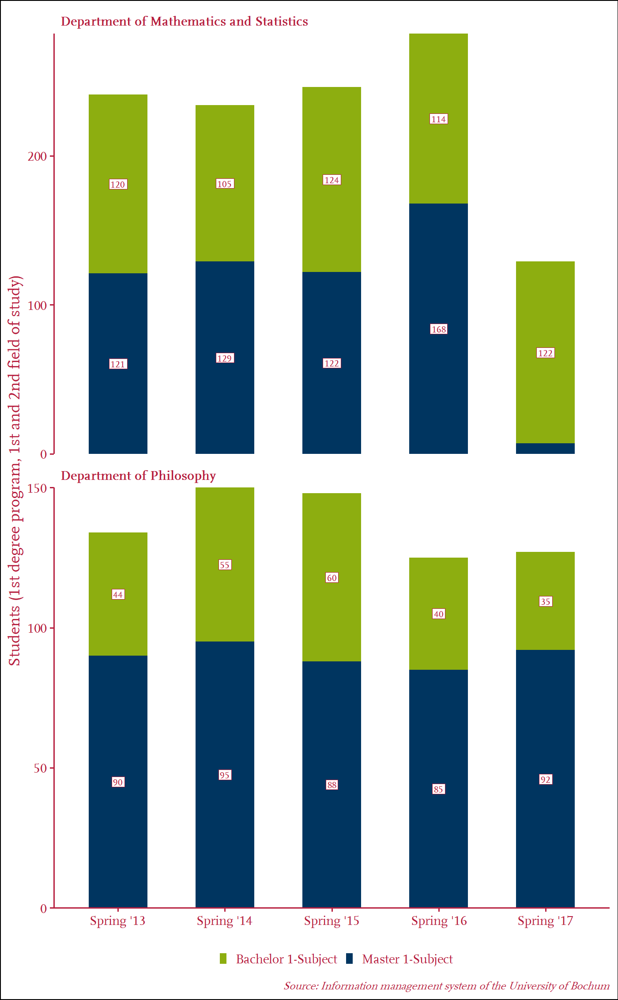
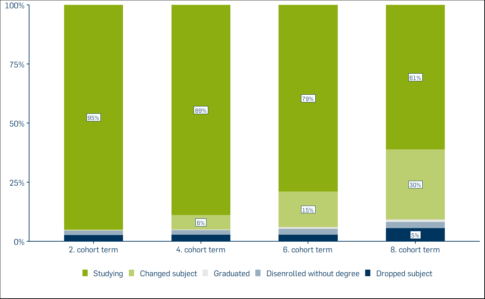

The plotting functions in RUBer do not in any way extend the functionality provided by ggplot2 itself. By preconfiguring a lot of the paramters, though, RUBer’s plotting functions are meant to be more accessible and easier to use. One of the inspirations for this was the bbplot package used by the BBC News data team.
Available figure types:
For plotting vertical stacked bar charts, three variable names are mandatory: x_var for the x-coordinate, y_var for the y-coordinate and fill_var for the fill variable, which determines the groups to be stacked. Consider this example:
# Create test values for all three mandatory variables (x_var, y_var, fill_var).
df_t1_ex1 <- tibble::tribble(
~term, ~students, ~degree,
"Spring '13", 120, "Bachelor 1-Subject",
"Spring '14", 105, "Bachelor 1-Subject",
"Spring '15", 124, "Bachelor 1-Subject",
"Spring '16", 114, "Bachelor 1-Subject",
"Spring '17", 122, "Bachelor 1-Subject",
"Spring '13", 121, "Master 1-Subject",
"Spring '14", 129, "Master 1-Subject",
"Spring '15", 122, "Master 1-Subject",
"Spring '16", 168, "Master 1-Subject",
"Spring '17", 7, "Master 1-Subject",
)
# The data source is df_t1_ex1, x_var is mapped to term, y_var to students, and
# the fill_var to degree.
rub_plot_typ_1(
df = df_t1_ex1,
x_var = term,
y_var = students,
fill_var = degree
)
Next a more complex example, in which we additionally provide the label for the y-axis, y_label and a caption indicating the source of the data, caption. We also want to suppress the value label for Master students in the spring term 2017, because the value is so small. By default, labels for values accounting for less than 4% of the total value are suppressed. In this case, the seven students account for 7/(7+122) = 5.4% of the total value, so we increase the value for filter_cutoff from the default of 0.04 to 0.06.
df_t1_ex2 <- tibble::tribble(
~term, ~students, ~degree,
"Spring '13", 120, "Bachelor 1-Subject",
"Spring '14", 105, "Bachelor 1-Subject",
"Spring '15", 124, "Bachelor 1-Subject",
"Spring '16", 114, "Bachelor 1-Subject",
"Spring '17", 122, "Bachelor 1-Subject",
"Spring '13", 121, "Master 1-Subject",
"Spring '14", 129, "Master 1-Subject",
"Spring '15", 122, "Master 1-Subject",
"Spring '16", 168, "Master 1-Subject",
"Spring '17", 7, "Master 1-Subject",
)
# Set values for parameters setting the y-axis title, captioning the source data
# and filtering small value labels (all labels below 6% of the stacked total).
rub_plot_typ_1(
df = df_t1_ex2,
x_var = term,
y_var = students,
fill_var = degree,
y_label = "Students (1st degree program, 1st and 2nd field of study)",
caption = "Information management system of the University of Bochum",
filter_cutoff = 0.06
)
The third example adds even more parameters. You can facet the figure by a discrete variable in order to make direct comparisons between groups, e.g. different departments. You can also change the default color and font used in figures (see the documentation for RUBer::rub_style()).
df_t1_ex3 <- tibble::tribble(
~term, ~students, ~degree, ~department,
"Spring '13", 120, "Bachelor 1-Subject", "Department of Mathematics and Statistics",
"Spring '14", 105, "Bachelor 1-Subject", "Department of Mathematics and Statistics",
"Spring '15", 124, "Bachelor 1-Subject", "Department of Mathematics and Statistics",
"Spring '16", 114, "Bachelor 1-Subject", "Department of Mathematics and Statistics",
"Spring '17", 122, "Bachelor 1-Subject", "Department of Mathematics and Statistics",
"Spring '13", 121, "Master 1-Subject", "Department of Mathematics and Statistics",
"Spring '14", 129, "Master 1-Subject", "Department of Mathematics and Statistics",
"Spring '15", 122, "Master 1-Subject", "Department of Mathematics and Statistics",
"Spring '16", 168, "Master 1-Subject", "Department of Mathematics and Statistics",
"Spring '17", 7, "Master 1-Subject", "Department of Mathematics and Statistics",
"Spring '13", 120, "Bachelor 1-Subject", "Department of Philosophy",
"Spring '14", 105, "Bachelor 1-Subject", "Department of Philosophy",
"Spring '15", 124, "Bachelor 1-Subject", "Department of Philosophy",
"Spring '16", 114, "Bachelor 1-Subject", "Department of Philosophy",
"Spring '17", 122, "Bachelor 1-Subject", "Department of Philosophy",
"Spring '13", 121, "Master 1-Subject", "Department of Philosophy",
"Spring '14", 129, "Master 1-Subject", "Department of Philosophy",
"Spring '15", 122, "Master 1-Subject", "Department of Philosophy",
"Spring '16", 168, "Master 1-Subject", "Department of Philosophy",
"Spring '17", 7, "Master 1-Subject", "Department of Philosophy"
)
# Facet by department, which effectively leads to two plots in one figure. The
# default font is changed to RUB Scala TZ and the main color is changed from
# RUB blue to dark red.
rub_plot_typ_1(
df = df_t1_ex3,
x_var = term,
y_var = students,
fill_var = degree,
y_label = "Students (1st degree program, 1st and 2nd field of study)",
caption = "Information management system of the University of Bochum",
filter_cutoff = 0.06,
facet_var = department,
color = RUB_colors["dark red"],
font = "RUB Scala TZ"
)
df_t2_ex1 <- tibble::tribble(
~cohort_term, ~status_percentage, ~cohort_status, ~cohort_label,
"2. cohort term", 0.9513551740, "Studying", "Bachelor 1-Subject: Starting cohort fall 2011 (n=222)",
"2. cohort term", 0.0029748098, "Changed subject", "Bachelor 1-Subject: Starting cohort fall 2011 (n=222)",
"2. cohort term", 0.0004673679, "Graduated", "Bachelor 1-Subject: Starting cohort fall 2011 (n=222)",
"2. cohort term", 0.0186648938, "Disenrolled without degree", "Bachelor 1-Subject: Starting cohort fall 2011 (n=222)",
"2. cohort term", 0.0265377545, "Dropped subject", "Bachelor 1-Subject: Starting cohort fall 2011 (n=222)",
"4. cohort term", 0.8896149868, "Studying", "Bachelor 1-Subject: Starting cohort fall 2011 (n=222)",
"4. cohort term", 0.0616919929, "Changed subject", "Bachelor 1-Subject: Starting cohort fall 2011 (n=222)",
"4. cohort term", 0.0016484686, "Graduated", "Bachelor 1-Subject: Starting cohort fall 2011 (n=222)",
"4. cohort term", 0.0201024499, "Disenrolled without degree", "Bachelor 1-Subject: Starting cohort fall 2011 (n=222)",
"4. cohort term", 0.0269421019, "Dropped subject", "Bachelor 1-Subject: Starting cohort fall 2011 (n=222)",
"6. cohort term", 0.7901183540, "Studying", "Bachelor 1-Subject: Starting cohort fall 2011 (n=222)",
"6. cohort term", 0.1502641318, "Changed subject", "Bachelor 1-Subject: Starting cohort fall 2011 (n=222)",
"6. cohort term", 0.0074548056, "Graduated", "Bachelor 1-Subject: Starting cohort fall 2011 (n=222)",
"6. cohort term", 0.0243490259, "Disenrolled without degree", "Bachelor 1-Subject: Starting cohort fall 2011 (n=222)",
"6. cohort term", 0.0278136827, "Dropped subject", "Bachelor 1-Subject: Starting cohort fall 2011 (n=222)",
"8. cohort term", 0.6115873010, "Studying", "Bachelor 1-Subject: Starting cohort fall 2011 (n=222)",
"8. cohort term", 0.2961468339, "Changed subject", "Bachelor 1-Subject: Starting cohort fall 2011 (n=222)",
"8. cohort term", 0.0104080044, "Graduated", "Bachelor 1-Subject: Starting cohort fall 2011 (n=222)",
"8. cohort term", 0.0274549015, "Disenrolled without degree", "Bachelor 1-Subject: Starting cohort fall 2011 (n=222)",
"8. cohort term", 0.0544029593, "Dropped subject", "Bachelor 1-Subject: Starting cohort fall 2011 (n=222)",
)
rub_plot_typ_2(
df = df_t2_ex1,
x_var = cohort_term,
y_var = status_percentage,
fill_var = cohort_status,
facet_var = cohort_label,
fill_reverse = TRUE
) 